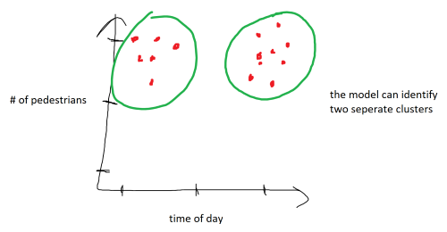

Introduction
Making machines learn, teaching a computer how to learn. In this article, we will answer the question “what is machine learning?” and explore the different types of machine learning.
What is Machine Learning?
Lets start off by defining what machine learning is not. Machine learning is not a machine learning from a human. A person telling a computer what to do in specific cases is not machine learning or artificial intelligence.
For example, a trader telling a computer to sell a stock when it reaches a certain price is not machine learning. We might consider that intelligent behavior, but it’s not artificial intelligence because the intelligent action came from the person telling the computer what to do.

Machine Learning is feeding some kind of data into a machine learning model. As a result, the machine knows what to do on it’s own.
An example is to read in different images of dogs and cats so that the computer recognizes and learns what a dog looks like and what a cat looks like. We can then feed in new images that the computer has never seen before and the computer is able to tell us if the image is dog or cat. There is no human telling the computer that “a dog has a longer snount” - the machine figures it out on it’s own.

Types of Machine Learning
There are three major types of machine learning: supervised learning, unsupervised learning, and reinforcement learning.
Supervised Learning
Supervised learning is a type of machine learning where a model learns from labeled input data to make predictions or classifications about unseen data. In supervised learning, the training data consists of a set of input features and their corresponding output labels, which are provided to the model during the training process.
The example above of feeding labeled images of dogs and cats is an example of supervised learning. We are giving “super-vision” to the model by telling it what each fed image is classified as.
Unsupervised Learning
Unsupervised learning is a type of machine learning where a model learns to find patterns and relationships in input data without being provided with explicit labels. In unsupervised learning, the model is presented with a set of input data and must find structure or regularities in the data on its own.
For example, a city collects data on the number of pedestrians in a certain area and the time of day, plotting the data on a scatter plot. Without telling the model the classification of each data point, it can group the data points into clusters based on their location on the scatter plot.

In this example, one cluster might be made up of data points that represent intersections with high pedestrian traffic during rush hour, while another cluster might be made up of data points that represent intersections with high pedestrian traffic during lunchtime.
Reinforcement Learning
Reinforcement learning is where an agent (an entity or system) learns to make a sequence of decisions based on the feedback it receives from the environment. In reinforcement learning, the agent interacts with the environment and learns from the rewards or penalties it receives based on its actions. The goal of reinforcement learning is to learn a policy, which is a set of rules that dictate the agent’s actions in different situations.
For example, we want to train a robot to nagivate a maze. It can take actions such as moving forward, turning left or right, and moving backward. Each time the agent does something, it receives a positive or negative reward. For example, the agent could receive a positive reward for moving closer to the exit or a negative reward for a crashing into a wall.
By taking actions and receiving feedback, the agent learns to navigate the maze and find the exit more efficiently. Over time, the agent will explore different paths in the maze, learn which paths lead to rewards, and avoid those that lead to penalties. Eventually, the agent will develop a policy that maximizes its cumulative reward and leads to finding the exit quickly.